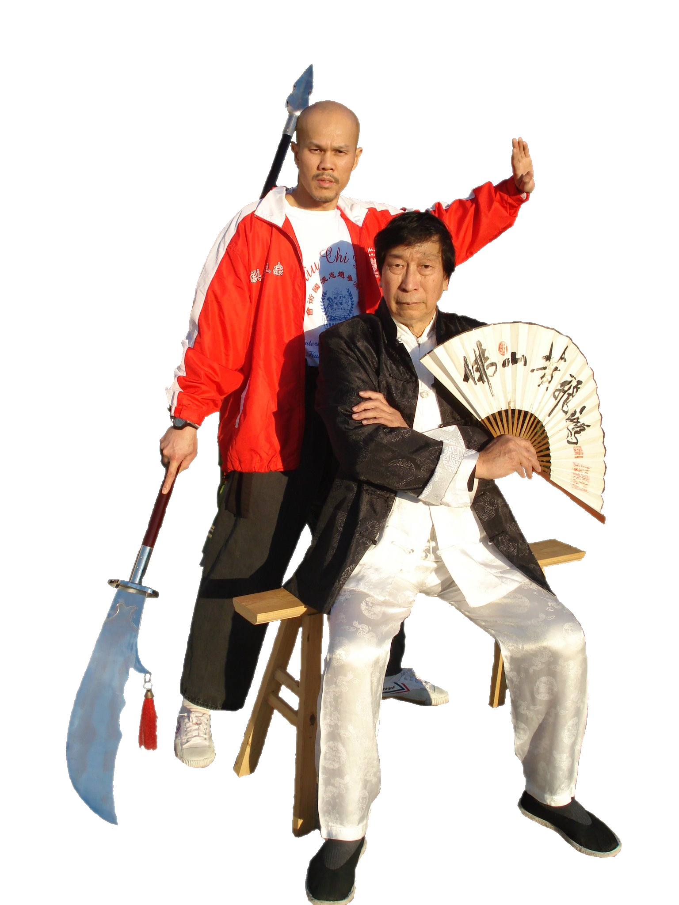

EDUCATION
- 1995 Doctor of Chiropractic – Logan College of Chiropractic
- 1991 Bachelor of Science in Physical Education – Truman State University
CERTIFICATION & AWARDS
- 1995 Licensed Chiropractor in Missouri
- 1996 Certified Emergency Medical Technician in Missouri
- 1996 Certified Chiropractic Sports Physician
- 1999 Board Certified Acupuncturist in Missouri
- 2005 Gold Medal in Sparring & Silver Medal in Form
Wu Hsing Chuan Five Animal 25th Anniversary Tournament in St Louis, MO
- 2008 Medals in Lion Dance Competition
1st World Top Kung Fu Championship in Hong Kong
- 2013 Master Demonstration
5th International Traditional Kung Fu Association in Concord, CA
- 2013 Featured in Nov/Dec issue of Kung Fu Tai chi Magazine
- 2014 Gold Medal in Empty Hand Form & Gold Medal in Long Weapon Form
22nd UC Berkeley Chinese Martial Arts Tournament, Berkeley, CA
- 2015 Silver Medal in Empty Hand Form
Tiger Claw Elite Championship, San Jose, CA
- 2016 Silver team trophy in the International Lion Dance Competition
1st Sabah Lion Dance World Challenge Competition, Sabah, Malaysia
PROFESSIONAL MEMBERSHIPS
- Missouri State Chiropractic Association
- American Chiropractic Association Sports Council
- Board Member in the City of St. Louis Health Department
- International Chiu Chi Ling Hung Ga Kung Fu Association
EXPERIENCE
- 2012 – now Lion Dance with sifu Wan Kin On in Hong Kong, China
- 2008 – now Hung Ga Gung Fu with Sifu Chiu Chi Ling in San Francisco, CA
- 2010 – now Director & Instructor of International Shaolin Wushu Center, St Louis Missouri
- 2010 – 2012 Shaolin Chuan and weapon with Sifu Yan Xue
- 2007 – 2010 Chen Style Tai Chi Chuan and Chi Gong with Sifu Goretti Lim
- 2004 – 2007 Hung Ga Gung Fu & Lion Dance with Sifu Wayne Judge
- 2001 – 2004 Chen Style Taiji Chuan and Chi Gong with Sifu Justin Meehan
- 1986 – 2001 Varsity diving team in Truman State University
- 1979 – 1986 Street smarts in Riverview Garden School District of Ferguson, MO
- 1978 – 1979 Manual labor in the Malaysian refugee camp
- 1974 – 1978 Street fights in south Vietnam
OTHER SKILLS
- Speak fluently in Cantonese Chinese and Vietnamese
- Speak & read minimally in Mandarin Chinese
